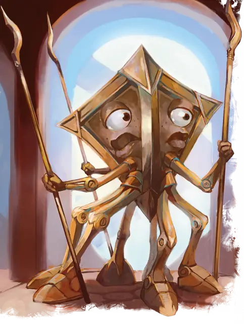

Модрон тридрон
Modron Tridrone
Средний Конструкт, Принципиальный Нейтральный

Класс Защиты 15 Инициатива +1 (11)
Хиты 16 (3к8 + 3)
Скорость 30 футов
| мод | спас | ||
|---|---|---|---|
| СИЛ | 12 | +1 | +1 |
| ЛОВ | 13 | +1 | +1 |
| ТЕЛ | 12 | +1 | +1 |
| мод | спас | ||
|---|---|---|---|
| ИНТ | 9 | −1 | −1 |
| МДР | 10 | +0 | +0 |
| ХАР | 9 | −1 | −1 |
Иммунитеты Очарованный
Чувства пассивное Восприятие 10, Истинное зрение 120 футов
Языки Модронский
Опасность 1/2 (100 опыта; БВ +2)
Особенности
Распад. Если модрон умирает, он распадается в пыль, роняя всё, что он носил или нёс.
Действия
Мультиатака. Модрон совершает три атаки Заводным копьём.
Заводное копьё. Бросок рукопашной или дальнобойной атаки: +3, досягаемость 5 фт. или дистанция 120 фт. Попадание: 4 (1к6 + 1) Силового урона. Промах или попадание: Копьё магическим образом возвращается в руку модрона сразу после дальнобойной атаки.
Бонус мастерства +2
Среда обитания Механус
Сокровища Отсутствуют
Модроны
Механизированные хранители мультивселенского порядка
Модроны — это создания абсолютного порядка, сочетающие в себе магию и механику. Эти обитатели Заводного плана Механуса ухаживают за невероятными механизмами вотчины порядка и противостоят силам хаоса по всей мультивселенной.
Все модроны входят в обширную иерархию, которая начинается с причудливых монодронов и заканчивается их лидером — богоподобным Праймусом. Каждый модрон должен выполнять задачи, полученные от вышестоящих собратьев, и делать это беспрекословно. Как правило, они общаются только с модронами своего ранга или рангом ниже и выше. Другие, находящиеся более чем на один ранг выше и ниже, слишком просты или слишком сложны для их понимания.
Модроны превосходно справляются с работой, требующей терпения и точности, но плохо понимают, что такое искусство и юмор. Им чуждо чувство собственной важности. Они убеждены, что порядок в мультивселенной зависит от эффективности их работы.
Изредка модрон может взбунтоваться и начать действовать по собственной воле. В таком случае за неисправным сородичем отправляют других модронов, чтобы починить или утилизировать его.
Тридроны присматривают за младшими модронами и возглавляют их в битве. Они с подозрением относятся к данным, полученным от любых существ, кроме модронов.
Походы модронов
Периодически модроны покидают Механус, чтобы выполнить задание божеств порядка или для участия в Великом походе модронов, стремясь распространить своё мировоззрение на другие планы бытия. Совершите бросок по таблице «Операция модронов» для вдохновения или выберите сами причину, которая привела группу модронов в другой мир.
Операция модронов
| 1к8 | Модроны… |
| 1 | Создают механический аванпост, чтобы следить за равновесием неведомых планарных сил. |
| 2 | Стараются обеспечить паритет сил в вечном сражении добра и зла. |
| 3 | Раскапывают портал на другой план. |
| 4 | Ищут потерянный отряд. |
| 5 | Восстанавливают работу своего колоссального забытого механизма. |
| 6 | Пытаются вырубить лес, срыть гору или уничтожить город до прибытия большой процессии модронов. |
| 7 | Запечатывают планарный разлом или зону дикой магии. |
| 8 | Вступают в войну с демонами, слаадами или хаотичными Феями. |